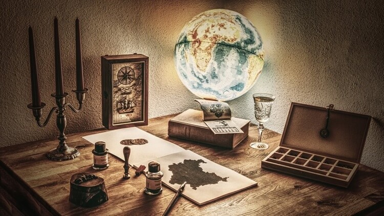

Чому на картах північ відзначають саме вгорі
Геофізики нещодавно оновили магнітну модель світу – навігаційні дані, що використовуються для всіх пристроїв, від мобільних телефонів до супутників, і виявили, що магнітна північ зміщується.
Крапка, яка колись знаходилася в арктичній Канаді, швидко рухається у бік Сибіру. Але навіть це відкриття не здатне пояснити, чому на картах північ завжди зверху.
Варіативна північ
- Не завжди на картах існувало певне правило щодо правильного розташування півночі.
- На деяких ранніх єгипетських примірниках південь містився вгорі.
- Інші поміщали схід зверху через сонце, що сходить.
- А ранні американські поселенці іноді використовували карти із заходом угорі, бо це був напрямок, у якому вони часто рухалися.
Вклад Птолемея
Якщо хтось і зіграв роль при розміщенні півночі вгорі карти, то це Клавдій Птолемей. У II столітті він написав впливову “Географію”, в якій було зображено “глобальну” карту з північною стороною нагорі.
Ніхто не знає точно, чому він так позиціонував його, але, можливо, в Олександрійській бібліотеці, де проводив свої дослідження, просто не було достатньо інформації про Південну півкулю.
В епоху Відродження творчість Птолемея знову привернула увагу. На той час було виявлено явище магнітної півночі, що зробило стародавній план ще привабливішим для картографів.
Але навіть це відкриття не здатне пояснити, чому на картах північ завжди зверху.
На думку Меркатора
Також відомо, що складання карти Меркатора теж зробило значний внесок у формування уявлень про розташування півночі.
Ця карта була складена ще в другій половині XVI ст. Її унікальність полягала у зображенні з урахуванням кривизни Землі.
Це було потрібне для гарної навігації.
Проте сам укладач цієї карти приділяв не надто велику увагу тому, де розташовувалися полюси.
Меркатор вважав, що хоч північ і розташована нагорі карти, це неважливо, адже туди все одно ніхто не захоче плисти.
Три професії з минулого, порівняно з якими сучасна робота видасться відпочинком
Багато хто звик скаржитися на свою роботу, але нам ще пощастило, адже порівняно з професіями минулого, сучасні – райський відпочинок.
Деякі спеціальності вимагали непосильної фізичної праці та витривалості.
Нижче ми розповідаємо про три професії з минулого, поруч із якими робота в офісі видасться відпусткою.
Соледобувач
Це тепер сіль – дешевий та поширений інгредієнт, проте в давнину вона була дуже цінною. І все не завдяки смаковим особливостям, а тому, що лише за допомогою солі можна було зберегти продукти на тривалий час придатними до вживання.
Так, приправа в давнину була дорогою, проте соледобувачам від цього не було легше. Вони отримували мізерну заробітну плату і працювали у кошмарних умовах. Вони постійно страждали від зневоднення, артриту та силікозу. Встановлено, що за часів Римської імперії основною причиною смерті людей до 30 років була якраз праця у соляних шахтах.
Весляр на галері
Відомо, що в якості греблі на кораблях використовували виснажених рабів, проте це траплялося тільки в крайніх випадках. Часто веслярами ставали боржники, котрі так відпрацьовували борг, були навіть наймані працівники. Платили, звичайно, мало, а ось робота була справжнє пекло.
Мало того, що доводилося довго і старанно веслувати, то ще й був ризик, що корабель потоплять. Коли гармат ще не було, битви на воді проходили інакше: одне судно просто стикалося з іншим або таранило носом. У веслярів у такому разі мало шансів на порятунок.